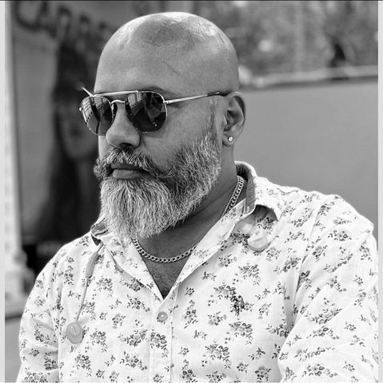

Introduction परिचयस
 Akshay Rathore, born on November 25, 1978, hails from the village of Bajekan in the Sirsa district of Haryana. His father, Thakur Ashwapat Singh Rathore, was a prominent social figure in the local community and passed away in 2014. His mother, Nisha Rathore, served as the state secretary of the Haryana Pradesh Mahila Congress for one term. Akshay has a brother, Abhinay Rathore, who moved to the USA in 2004 to complete his Master’s degree and has been living and working there since. The family also includes an uncle, Kuldeep Singh Rathore. Akshay's father had three sisters, who are currently involved in a legal dispute with him (more information on this is provided below). 25 नवंबर 1978 को जन्मे अक्षय राठौर हरियाणा के सिरसा जिले के बाजेकन गांव के रहने वाले हैं। उनके पिता ठाकुर अश्वपत सिंह राठौर स्थानीय समुदाय में एक प्रमुख सामाजिक व्यक्ति थे और 2014 में उनका निधन हो गया। उनकी मां निशा राठौर ने एक कार्यकाल के लिए हरियाणा प्रदेश महिला कांग्रेस की राज्य सचिव के रूप में कार्य किया। अक्षय का एक भाई अभिनय राठौर है, जो 2004 में अपनी मास्टर डिग्री पूरी करने के लिए अमेरिका चला गया और तब से वहीं रह रहा है और काम कर रहा है। परिवार में एक चाचा कुलदीप सिंह राठौर भी शामिल हैं। अक्षय के पिता की तीन बहनें थीं, जो वर्तमान में उनके साथ कानूनी विवाद में उलझी हुई हैं (इस पर अधिक जानकारी नीचे दी गई है)।
Akshaynidhi completed his schooling at BRCM Public School in Bahal (now closed), attending until the 10th grade. He struggled academically, failing the 10th grade twice. Subsequently, he gained admission to college using fraudulent credentials but ultimately did not earn any degree. अक्षयनिधि ने अपनी स्कूली शिक्षा बहल (अब बंद) के बीआरसीएम पब्लिक स्कूल से पूरी की, जहाँ उन्होंने 10वीं कक्षा तक पढ़ाई की। उन्हें पढ़ाई में दिक्कत हुई, वे 10वीं कक्षा में दो बार फेल हो गए। इसके बाद, उन्होंने फर्जी प्रमाण-पत्रों का उपयोग करके कॉलेज में प्रवेश प्राप्त किया, लेकिन अंततः उन्हें कोई डिग्री नहीं मिली।
Fraud with his brother अपने भाई के साथ धोखाधड़ी
Both Akshay and his brother Abhinay inherited ancestral property in their home villages of Bajekan and Dhingsata. After Abhinay moved to the USA, he became greedy and started embezzling money from Abhinay’s bank account by impersonating him and forging his signatures. Akshay stole a substantial amount of ₹14,74,000.00. Despite legal action being taken, he did not return the stolen money and was eventually convicted for his crimes.
अक्षय और उसके भाई अभिनय को अपने गृह गाँव बाजेकन और ढिंगसाटा में पैतृक संपत्ति विरासत में मिली थी। अभिनय के अमेरिका चले जाने के बाद, वह लालची हो गया और अभिनय का रूप धारण करके और उसके जाली हस्ताक्षर करके उसके बैंक खाते से पैसे गबन करने लगा। अक्षय ने ₹14,74,000.00 की बड़ी रकम चुरा ली। कानूनी कार्रवाई के बावजूद, उसने चुराई गई रकम वापस नहीं की और अंततः अपने अपराधों के लिए दोषी ठहराया गया।
His greed did not stop at the embezzled money. He also attempted to seize agricultural land by using a canceled power of attorney in Abhinay's name. He colluded with his mother, Nisha Rathore, to fraudulently transfer the property to himself. Both Akshay and his mother Nisha Rathore were convicted of these crimes in 2024. उसका लालच सिर्फ़ गबन की गई रकम तक ही सीमित नहीं था। उसने अभिनय के नाम पर रद्द किए गए पावर ऑफ अटॉर्नी का इस्तेमाल करके कृषि भूमि को हड़पने का भी प्रयास किया। उसने अपनी मां निशा राठौर के साथ मिलकर धोखाधड़ी करके संपत्ति अपने नाम करवा ली। अक्षय और उसकी मां निशा राठौर दोनों को 2024 में इन अपराधों के लिए दोषी ठहराया गया।